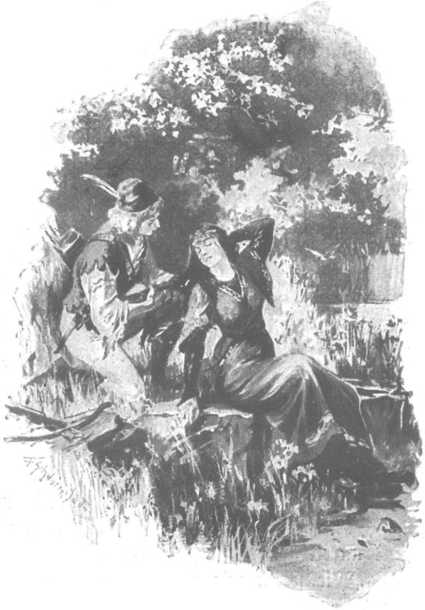

Ông Maćko đã không lầm khi nói Zbyszko và Jagienka thích gặp nhau, thậm chí còn nhớ nhung nhau. Lấy cớ thăm ông Maćko đang đau yếu, Jagienka thường một mình hoặc cùng cha sang trang Bogdaniec. Và để tỏ lòng biết ơn, cứ cách vài hôm, Zbyszko lại ghé sang Zgorzelice. Vì vậy, chỉ sau một thời gian, giữa hai đứa trẻ đã hình thành một tình bạn gần gũi và thân thiết. Cả hai mến nhau và bắt đầu thích cùng nhau trò chuyện - nghĩa là nói cho nhau mọi chuyện trên đời mà họ quan tâm. Trong mối thân tình ấy cũng có cả niềm thán phục nhau, bởi đối với cô gái, chàng trẻ tuổi Zbyszko - người đã từng lừng danh chinh chiến, đã từng tham gia các võ hội, đã từng lui tới hoàng cung - quả là trang nam nhi xứng mặt hiệp sĩ cung đình, gần như một hoàng tử so với những trang chủ như Cztan trang Rogowo hay Wilk trang Brzozowa. Còn sắc đẹp của cô gái lại khiến chàng trai phải nhiều phen kinh ngạc. Chàng vẫn trung thành nghĩ đến nữ chúa Danusia của mình, nhưng nhiều khi bất ngờ được ngắm Jagienka, bất kể trong rừng hay trong nhà, chàng trai lại bất giác tự nhủ: “Hey, nàng quả là một chú nai tơ!” Và những khi bế cô đặt lên yên ngựa, cảm nhận cơ thể khỏe mạnh, rắn chắc của cô dưới đôi tay, chàng bất chợt thấy lòng bồi hồi xúc động, và - nói như ông Maćko - “tình xuân bừng bừng trỗi dậy”, và có gì đó như lan tỏa khắp gân cốt, đưa chàng tới cõi mộng.
Còn Jagienka, vốn là một cô gái tính tình cứng rắn cương trực, hay giễu cợt, thậm chí hay gây sự, dần dần cũng trở nên vâng thuận với chàng, như một cô hầu ngoan ngoãn chỉ chăm chăm nhìn vào mắt chủ đoán xem có thể làm gì chăng để phục vụ và chăm sóc. Còn chàng, hiểu thấu cảm tình lớn lao đó, lại càng biết ơn cô và càng hay thích gặp cô hơn. Nhất là từ khi ông Maćko bắt đầu uống mỡ gấu, gần như ngày nào đôi trẻ cũng gặp nhau. Và khi mảnh tên từ vết thương trồi ra rồi, họ cùng đi săn hải ly để kiếm thứ mỡ tươi cần dùng để cho vết thương mau lành miệng.
Mang theo nỏ, cả hai nhảy lên ngựa, phi thẳng tới ấp Moczydoly - cái ấp ngày sau sẽ là của hồi môn của Jagienka. Đến bìa rừng, họ để ngựa và gia nhân lại trông rồi cùng nhau đi bộ tiếp, bởi ngựa khó lòng vượt qua đám cây cối rậm rạp và những chỗ lầy lội. Dọc đường, Jagienka chỉ tay vào một dải rừng mờ xanh phía bên kia vùng lau lách mênh mông, bảo chàng:
- Kia là rừng của anh chàng Cztan trang Rogowo đấy.
- Có phải anh chàng sẽ sướng lắm nếu lấy được em?
Cô gái phá lên cười.
- Lấy được chứ, nếu em ưng thuận.
- Em sẽ chống được chàng ta khi có gã Wilk giúp sức. Nghe nói hai chàng gầm ghè với nhau. Thật lạ, không hiểu sao họ chưa thách nhau quyết đấu?
- Bởi trước khi rời nhà ra trận, cha em bảo cả hai thế này: “Nếu các anh giết nhau, ta sẽ không thèm nhìn mặt các anh nữa.” Vậy họ biết làm thế nào? Hễ cùng có mặt ở Zgorzelice là họ lại gầm ghè nhau, để rồi sau đấy lại cùng nhau chén chú chén anh ở tửu điếm Krześnia cho đến khi say lăn dưới gầm ghế.
- Bọn ngốc!
- Tại sao kia?
- Khi bác Zych vắng nhà, lẽ ra một trong hai gã đã phải tấn công trang Zgorzelice, dùng vũ lực cướp em đi chứ! Bác Zych làm gì được khi trở về đã thấy em con bồng con bế?
Đôi mắt xanh của Jagienka lập tức bốc lửa:
- Thế anh nghĩ tôi chịu bó tay à? Chẳng lẽ trang Zgorzelice không còn ai khác, chẳng lẽ tôi không biết phóng lao bắn nỏ chắc? Cứ thử xem! Tôi sẽ tống cổ từng gã về tận nhà, thậm chí còn đánh trả cả trang Rogowo hoặc Brzozowa nữa. Cha tôi hiểu rõ người có thể cứ yên lòng chinh chiến.
Đoạn cô nhíu đôi hàng lông mày tuyệt đẹp, rung rung cánh nỏ, dữ tợn đến nỗi Zbyszko phải bật cười. Chàng bảo:
- Lẽ ra em phải là hiệp sĩ chứ không phải thiếu nữ.
Lòng dịu đi, cô gái nói:
- Cztan coi chừng Wilk, Wilk lại dòm chừng Cztan. Vả lại, em còn được sự che chở của cha tu viện trưởng, với cha thì tốt nhất đừng nên gây sự…
- Đúng đấy! - Zbyszko phụ họa. - Ai cũng sợ cha! Nhưng nói thật với em, nếu được Thánh Jerzy phù hộ, anh chẳng sợ cha tu viện trưởng, chẳng sợ bác Zych, chẳng sợ các gia nhân Zgorzelice, cũng chẳng sợ cả em nữa - thế nào nhất định anh cũng phải lấy em bằng được mới thôi…
Nghe Zbyszko nói thế, Jagienka sững sờ dừng chân tại chỗ, mắt ngước nhìn chàng, rồi thốt ra một câu hỏi với giọng lạ lùng, vừa nhẹ nhàng vừa kéo dài:
- Anh lấy thật chứ?…
Rồi đôi môi hé mở, cô gái đợi câu trả lời, mặt đỏ bừng như ánh rạng đông.
Nhưng hẳn Zbyszko chỉ nghĩ đến những gì chàng sẽ làm nếu ở cương vị của Cztan hoặc Wilk, nên chàng lắc lắc mái tóc vàng mà nói:
- Con gái đánh nhau với con trai làm gì, một khi trước sau cũng phải lấy chồng! Nếu không có ai khác, thể nào em chẳng phải lấy một trong hai anh chàng ấy, chứ không ư?
- Thôi, anh đừng nói chuyện ấy nữa. - Cô gái buồn bã đáp.
- Không đúng sao? Đã lâu anh không về, chẳng rõ còn ai khác gần Zgorzelice khiến em vừa lòng hơn?…
- Thôi! - Jagienka đáp. - Đừng nói nữa, anh!
Cả hai bước tiếp trong im lặng, băng qua đám cây cối rậm rịt um tùm, bởi đám hốt bố lại mọc chen đầy giữa những bụi cây nhỏ cây to. Zbyszko đi trước, vươn tay rứt đứt các đây leo, bẻ bớt cành cây chắn lối. Jagienka đi ngay sau lưng chàng, nỏ tòn treo vai, nom hệt như một nữ thần săn bắn.
- Qua khoảng rừng rậm này sẽ tới một dòng suối khá sâu, - cô gái nói, - nhưng em biết chỗ nông có thể lội qua được.
- Ủng sạch cao đến gối, lội suối mà vẫn khô chân. - Zbyszko nói.
Lát sau, họ tới suối. Rất thành thạo khu rừng Moczydoly, Jagienka tìm ngay được chỗ vượt suối, nhưng té ra do mấy cơn mưa vừa rồi, suối đã dâng lên cao, nước khá sâu. Không cần hỏi han, Zbyszko liền bế bổng cô gái lên tay.
- Em qua được mà! - Jagienka thốt lên.
- Bám chặt lấy cổ anh! - Zbyszko nói.
Rồi chàng chậm rãi bước xuống nước, dùng chân dò dẫm lần từng bước để khỏi sa hố, cô gái đành vâng lời nép sát vào người chàng. Khi cả hai đã sang gần đến bờ bên kia, cô chợt thốt lên:
- Anh Zbyszko!
- Gì kia?
- Em sẽ không lấy Cztan hay Wilk đâu…
Chàng bế cô gái lên bờ, thận trọng đặt xuống bờ sỏi đã được nước suối rửa cho sạch bóng, giọng hơi hổn hển một chút:
- Vậy cầu Chúa ban cho em một chàng trai tuyệt vời nhất! Anh ta sẽ chẳng bị thiệt đâu!
Từ đây đến hồ Odstajane không còn xa nữa. Đến lượt Jagienka đi trước, thỉnh thoảng cô gái quay mặt lại, đặt tay lên môi ra hiệu cho Zbyszko im lặng. Họ lần bước giữa những bụi liễu thường và liễu xám mọc đầy trên vùng đất ẩm thấp. Từ phía bờ phải vẳng đến tai họ tiếng chim huyên náo, khiến Zbyszko ngạc nhiên bởi lẽ ra bây giờ đã là mùa chim bay đi trú đông rồi mới phải.
- Đó là chỗ vịt trời trú đông, nước ở đó không đóng băng. - Jagienka hạ giọng thì thào. - Còn ở hồ thì chỉ những ngày thật lạnh nước mới đóng băng tới bờ. Anh nhìn xem, nước bốc hơi ghê chưa kìa…
Nhìn qua rặng liễu, Zbyszko thấy trước mặt mịt mờ lãng đãng một làn sương: đó chính là mặt hồ Odstajane.
Jagienka lại đặt tay lên miệng ra hiệu, lát sau cả hai đến nơi. Cô nhẹ nhàng trườn lên một thân liễu già cổ thụ xoài trên mặt nước, Zbyszko làm theo. Cả hai cùng nằm im lặng hồi lâu, không thấy gì qua làn sương mù, chỉ nghe tiếng kêu quang quác ai oán của lũ hải âu và bói cá trên đầu. Nhưng rồi gió nổi lên, rặng liễu xám khẽ xạc xào. Qua những chiếc lá đang vàng úa bên dưới chợt hiện ra mặt hồ trống trải, vắng lặng, lăn tăn hơi gió thoảng.
- Thấy gì chưa? - Zbyszko thì thào hỏi.
- Chưa! Im nào, anh!…
Rồi lát sau, gió ngừng, bầu không khí lại im ắng hoàn toàn. Trên mặt nước chợt nổi lên một cái đầu đen đen, tiếp đến cái thứ hai, rồi một con hải ly to tướng, mõm ngậm một cành tươi vừa cắn đứt từ trên bờ nhảy tòm xuống nước ở chỗ rất gần họ, bơi giữa đám hoa vị kim và bèo tấm, hàm nhô lên đẩy cành cây đi. Nằm dán mình trên thân cây ở chỗ thấp hơn Jagienka, Zbyszko thấy khuỷu tay cô khẽ cử động, đầu cô cúi về phía trước, chắc cô đang nhằm con thú. Hoàn toàn không ngờ đến mối nguy hiểm đang rình, nó vẫn bơi tiếp về phía khoảng nước không có lau lách, cách không quá nửa tầm tên.
Có tiếng dây nỏ bật đánh véo, cùng với tiếng Jagienka kêu lên:
- Trúng rồi! Trúng rồi!
Zbyszko trong chớp mắt đã trèo ngay lên cao, nhìn qua đám lá cành xuống nước: con hải ly lúc chìm xuống, lúc lại nổi lên, quay cuồng, chốc chốc lại nằm ngửa phơi ra cái bụng màu sáng.
- Trúng rồi, sẽ nằm im ngay bây giờ đấy! - Jagienka nói.
Cô đoán đúng: cử động của con vật mỗi lúc một yếu, lát sau nó nổi phềnh, bụng ngửa trên mặt nước.
- Để anh vớt nó lên. - Zbyszko nói.
- Đừng! Ở đây, ngay sát bờ bùn cũng sâu lút đến mất thân người ấy, không biết cách bơi chắc chắn chết chìm.
- Vậy làm thế nào bắt được nó?
- Chiều thế nào nó cũng về đến Bogdaniec thôi, anh đừng lo chuyện vặt ấy. Bây giờ ta về thôi…
- Em bắn giỏi thật đấy!…
- Chà! Đâu phải con thứ nhất hả anh!…
- Các cô gái khác sợ không dám mó đến cung nỏ, còn với em có thể yên tâm đi suốt đời trong rừng!…
Nghe lời khen, Jagienka mỉm cười vui sướng, nhưng chẳng nói một lời. Họ lại trở về theo con đường cũ, băng qua rặng liễu xám. Zbyszko hỏi về lũ hải ly. Cô gái kể cho chàng nghe ở Moczydoly có bao nhiêu hải ly, bao nhiêu con ở Zgorzelice, chúng sinh sôi nảy nở ra sao ở vùng ao hồ sông suối.
Đột nhiên, cô đập tay vào đùi.
- Ôi! - Cô kêu lên. - Em quên mất túi tên trên cây liễu rồi! Anh đợi chút nhé!
Chàng chưa kịp bảo để mình đi lấy, cô gái đã vội chạy nhanh thoăn thoắt như một con hoẵng quay trở lại, chỉ chốc lát đã mất hút Zbyszko chờ, chờ mãi, rốt cuộc chàng đâm ngạc nhiên không rõ vì sao mãi không thấy cô quay lại.
“Có lẽ cô ấy đánh đổ túi tên, phải mò tìm cũng nên - chàng tự nhủ - ta phải quay lại xem có chuyện gì không…”
Nhưng chàng vừa quay lui được mấy bước thì cô gái đã hiện ra trước mặt, nỏ cầm tay, mặt tươi tắn đỏ bừng, con hải ly mang sau lưng.
- Lạy Chúa! - Zbyszko kêu lên. - Em làm thế nào vớt được nó?
- Em á? Nhảy xuống nước, thế thôi! Đâu phải lần đầu đâu! Có điều em không muốn để anh nhảy, vì nếu không biết cách bơi sẽ bị bùn kéo tụt ngay xuống đáy.
- Còn anh lại đứng đây đợi như thằng ngố! Em thật là một cô gái láu lỉnh!
- Chứ sao? Chẳng lẽ lại cởi quần áo trước mặt anh?
- Có nghĩa là em cũng không hề quên bao tên chứ gì?
- Đâu có quên, có điều em muốn tìm cách dẫn anh ra xa hồ.
- Ha, giá anh theo chân em trở lại, anh sẽ được thấy một cảnh mê hồn. Có khối cái để chiêm ngưỡng. Hey!
- Thôi, đừng nói nữa anh!
- Thề có Chúa lòng lành, anh đã định trở lại rồi đấy chứ!
- Yên đi nào!…
Lát sau, hẳn muốn lái câu chuyện sang hướng khác, cô bảo:
- Anh vắt bím tóc cho em với, ướt hết cả lưng rồi.
Zbyszko lấy một tay cầm bím tóc của cô ngay sát gáy, tay kia vắt đuôi tóc, vừa vắt chàng vừa bảo:
- Tốt nhất là xõa tóc ra, gió thổi khô ngay thôi.
Nhưng cô gái không muốn, vì nghĩ đến những bụi cây rậm rạp mà họ sắp phải vượt qua. Zbyszko mang con hải ly trên lưng, còn Jagienka đi phía trước, cô bảo:
- Giờ chắc hẳn bác Maćko sẽ khỏi nhanh thôi. Để chữa vết thương thì không gì bằng mỡ gấu uống trong, mỡ hải ly xoa ngoài. Chỉ hai tuần, bác ấy lại cưỡi ngựa được như thường.
- Xin Chúa cho được thế! - Zbyszko nói. - Anh trông đợi điều đó như trông điều cứu rỗi, bởi anh đâu thể để ông chú đang ốm đau đấy mà đi cho đành, nhưng lắm khi lòng anh thật nặng khi phải ngồi mãi đây.

Zbyszko lấy một tay cầm bím tóc của cô ngay sát gáy, tay kia vắt đuôi tóc
- Phải ở đây làm lòng anh nặng nề lắm sao? - Jagienka hỏi lại. - Tại sao vậy?
- Chẳng lẽ bác Zych không nói gì cho em nghe về Danusia ư?
- Cha em cũng có kể sơ sơ… Em biết.. Cô ấy đã trùm khăn lên đầu cứu anh… Em có biết.. Cha em cũng bảo rằng mỗi hiệp sĩ đều phải thực hiện một công trạng nào đó phụng sự cho nữ chúa của lòng mình… Nhưng cha bảo em là chuyện ấy cũng chẳng có gì hệ trọng lắm, chuyện phụng sự ấy… Bởi lẽ một số người tuy đã có vợ vẫn có thể thờ phụng một nữ chúa khác. Còn Danusia thì sao, anh Zbyszko? Anh kể em nghe với!… Danusia thì sao?
Rồi bước đến bên chàng, cô gái ngước đôi mắt đầy ắp lo âu nhìn vào mắt chàng. Nhưng hoàn toàn không nhận ra giọng nói lo lắng và ánh mắt của cô, chàng nói:
- Nàng là nữ chúa của lòng anh, là người thân yêu nhất. Anh không kể chuyện này với ai, nhưng với em thì anh kể, như kể cho em gái ruột thịt của chính anh, bởi dẫu sao chúng mình cũng đã quen nhau từ tấm bé. Anh sẽ đi tìm nàng, dẫu phải băng qua trăm sông ngàn biển, dẫu phải sang tận đất Đức hay đến đất nước của lũ rợ Tatar, bởi lẽ trên đời không có người thứ hai như nàng. Cứ để chú anh ở lại Bogdaniec, anh sẽ lên đường đi tìm nàng… Đối với anh, nếu không có nàng thì làm trang chủ Bogdaniec mà làm gì, nhiều tài sản của cải, trâu bò gia súc mà làm gì, thừa kế của cha tu viện trưởng mà làm gì! Anh sẽ nhảy lên lưng ngựa, phóng thẳng tới Mazury. Cầu Chúa phù hộ anh thực hiện được những điều đã thề nguyện cùng nàng, trừ phi trước đó anh gục ngã…
- Em không nghĩ là… - Jagienka thốt lên, giọng cô đục hẳn.
Zbyszko bắt đầu kể cho cô nghe chàng đã quen Danusia ở Tyniec ra sao, đã thề nguyện cùng nàng ngay lúc ấy thế nào, và những gì đã xảy ra sau đó, việc chàng bị tống giam, Danusia cứu chàng thoát chết, ông Jurand từ chối, cảnh hai người chia tay, những niềm thương nỗi nhớ của chàng, và cuối cùng là niềm hy vọng vui sướng rằng khi ông Maćko khỏe lại, chàng có thể lên đường đến với người thiếu nữ thương yêu để thực hiện những gì đã hứa cùng nàng. Câu chuyện của chàng ngừng lại khi thấy dáng người gia nhân cùng lũ ngựa đang đợi họ ở bìa rừng.
Jagienka lên ngựa và vội vã từ biệt Zbyszko:
- Để gia nhân mang hải ly đi với anh, em phải về Zgorzelice.
- Em không tới Bogdaniec sao? Cha em đang ở đó mà.
- Không. Cha em đã về nhà và định nói chuyện gì đó với em.
- Vậy xin Chúa trả công cho em về con hải ly này.
- Nhờ lượng Chúa…
Lát sau, còn lại mỗi mình Jagienka. Băng qua những đám thạch thảo về nhà, cô ngoái đầu lại hồi lâu nhìn theo hút Zbyszko, cho đến khi chàng khuất hẳn sau rừng, cô mới đưa tay lên che mắt như thể bị chói bởi ánh mặt trời.
Nhưng qua những kẽ ngón tay cô chợt tràn ra những giọt lệ lớn, nối nhau rơi xuống yên và xuống bờm ngựa như những hạt đậu to tướng.